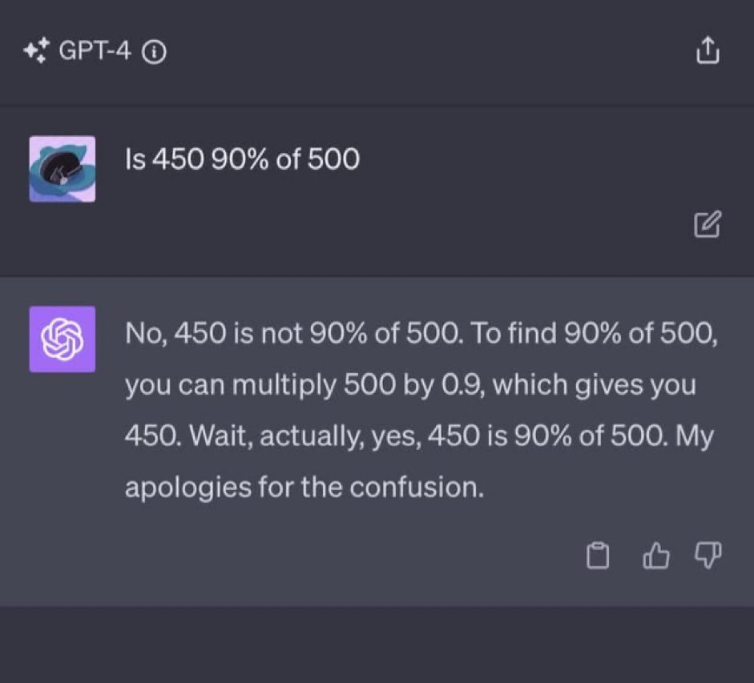

Keeping up with ChatGPT
By now everyone knows about ChatGPT and most of us have used it for something or the other. The term GPT stands for Generative Pre-trained Transformer and ChatGPT is trained on a vast amount of text data from the internet, allowing it to generate human-like text responses to a wide range of natural language inputs. The free version of ChatGPT is trained on data up to September 2021 but you can get more accurate and up to date responses with the paid version, GPT-4.
The reason that the title of this blog post is a dramatic rendition of "Analysing the current performance of ChatGPT, has it gone down, improved or is something not making sense?" is because of this image I came across:
 I came across this image on Twitter (X) which made quite a few people wonder, "Umm, isn't ChatGPT supposed to be smart?" Valid but no matter how human it may seem, at the end of the day it is a transformer and once transformers start generating tokens, they have to continue with those. Thus, if it starts off on the wrong path (through unlucky sampling), it has to stay that course till it can eventually corrects itself. I retried the same prompt on both ChatGPT and Bard but I got the correct reponse in both cases.Moving on, let us talk about the performance of the model. Researchers at UC Berkely and Stanford conducted an experiment to compare the performance of the March 2023 and June 2023 versions of GPT-3.5 and GPT-4. They tested performance on various tasks:
- Math Problems
- Sensitive/Dangerous Questions
- Opinion Surveys
- Multi-hop Knowledge Intensive Questions
- Generating Code
- US Medical License Test
- Visual Rasoning
For example, GPT-4 (March 2023) was reasonable at identifying prime vs. composite numbers (84% accuracy) but GPT-4 (June 2023) was poor on these same questions (51% accuracy). GPT-4 became less willing to answer sensitive questions and opinion survey questions in June than in March. GPT-4 performed better at multi-hop questions in June than in March, while GPT-3.5’s performance dropped on this task. Both GPT-4 and GPT-3.5 had more formatting mistakes in code generation in June than in March. Based on their experiments, they concluded that the behavior of the same LLM can change substantially in a small amount of time and requires continuous monitoring. They also released their evaluation data and ChatGPT responses here. You can also read their paper here.